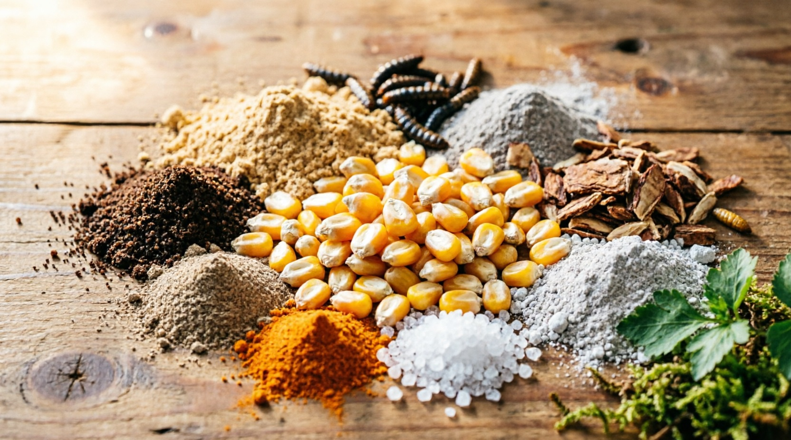
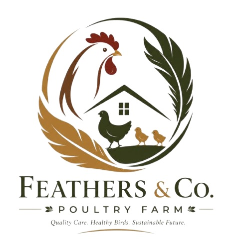

Feed Production and Management: The Science Behind Healthy, Productive Poultry
Feed is the single most important factor in poultry farming, accounting for approximately 60-70% of total production costs. At Feathers and CO POULTRY FARM in Nkolafamba, we have taken complete control of this critical process by developing our own in-house feed production system. This allows us to guarantee the nutritional quality of every gram of feed our birds consume while dramatically reducing costs and eliminating dependence on unreliable external suppliers.
Our feeding program is not a one-size-fits-all approach. We have designed specific, scientifically balanced rations for each of our three bird categories: 1,000 broilers, 20 agric-fowls, and 30 old layers. Each group has unique nutritional requirements that change as the birds grow and mature, and our feed formulations are adjusted accordingly to ensure optimal health, growth, and production at every stage.
"Feed is the foundation of everything we produce. If the nutrition is wrong, nothing else matters—not the housing, not the breed, not the technology. That is why we control every ingredient from seed to scoop."
Our Feed Formulation: What Goes Into Every Batch
Our custom feed formulation is the result of extensive research and collaboration with poultry nutritionists. The base recipe combines locally sourced, high-quality ingredients in precise proportions:
- Maize (55-65%): The primary energy source, grown on our own farm in Nkolafamba. Provides essential carbohydrates for growth and activity. All maize is dried to below 13% moisture to prevent aflatoxin contamination.
- Soybean Meal (20-28%): The primary protein source, sourced from trusted local farmers in the Centre Region. Provides essential amino acids for muscle development and egg production.
- Maggot Meal (5-10%): Our innovative Black Soldier Fly larvae supplement, reared on-site. Provides 40-45% crude protein, essential amino acids (lysine, methionine), and natural antimicrobial peptides that boost immunity.
- Fishmeal (3-5%): High-quality imported fishmeal for additional protein and omega-3 fatty acids, particularly important for layer egg quality.
- Bone Meal and Oyster Shell (2-4%): Critical calcium and phosphorus sources for strong skeletal development in broilers and thick, durable eggshells in layers.
- Palm Kernel Cake (3-5%): Locally available energy supplement rich in fiber and residual oil, supporting digestive health.
- Vitamin and Mineral Premix (1-2%): Commercially sourced premix containing Vitamins A, D3, E, K, B-complex, and essential trace minerals (zinc, iron, manganese, selenium, copper) to prevent deficiencies.
- Salt and Limestone (0.5-1%): Electrolyte balance and additional calcium supplementation.
- Toxin Binder (0.1-0.2%): Added as a safety measure to neutralize any residual mycotoxins that may be present in grain ingredients.

Feeding Schedules by Bird Type and Growth Stage
Precision feeding is critical for maximizing growth rates and production efficiency. Our feeding schedules are tailored to each bird category:
Broilers (1,000 birds):
- Starter Phase (Day 1-14): High-protein crumble feed (23% crude protein) fed ad libitum (freely available) to support rapid early growth. Feed is provided in shallow chick trays for easy access. Daily consumption: approximately 25-30g per bird.
- Grower Phase (Day 15-28): Medium-protein pellet feed (21% crude protein) with increased energy content. Transitioned to tube feeders. Daily consumption: approximately 60-80g per bird.
- Finisher Phase (Day 29-42): Lower-protein, high-energy pellet feed (19% crude protein) optimized for rapid weight gain and meat quality. Daily consumption: approximately 120-150g per bird. Feed is withdrawn 8-12 hours before processing to ensure clean digestive tracts.
Old Layers (30 birds):
- Layer Mash (Continuous): Specially formulated mash feed (17% crude protein, 4% calcium) designed for sustained egg production. Fed twice daily (morning at 6:00 AM and afternoon at 2:00 PM) at approximately 110-120g per bird per day.
- Calcium Supplementation: Additional oyster shell grit provided in separate feeders, allowing hens to self-regulate calcium intake based on their individual egg production needs.
- Lighting-Linked Feeding: Feed availability is synchronized with our LED lighting program to stimulate consistent laying patterns.
Agric-Fowls (20 birds):
- Maintenance Diet: Lower-energy, higher-fiber feed (15% crude protein) to prevent obesity while maintaining health and vitality. Fed once daily at approximately 80-100g per bird.
- Foraging Supplement: Agric-fowls are allowed supervised free-range access to grassy areas, where they supplement their diet with insects, seeds, and greens, reducing feed costs and improving meat flavor.
The Feed Production Process
Our on-site feed mill operates under strict quality control protocols:
- Step 1 - Ingredient Receiving and Inspection: All incoming raw materials are visually inspected and tested for moisture content, mold, and foreign matter. Any batch that fails inspection is rejected immediately.
- Step 2 - Grinding: Maize and soybeans are ground to the appropriate particle size using our hammer mill. Broiler starter feed requires a fine grind (2-3mm), while layer mash uses a coarser grind (4-5mm) to prevent selective feeding.
- Step 3 - Weighing and Batching: Each ingredient is precisely weighed according to the formulation recipe using digital scales accurate to 50 grams. Accuracy at this stage is critical for nutritional balance.
- Step 4 - Mixing: Ingredients are loaded into our horizontal ribbon mixer and blended for 8-10 minutes to ensure uniform distribution of all components, especially the vitamin-mineral premix which is added in very small quantities.
- Step 5 - Pelleting (Broiler Feed Only): For broiler grower and finisher feeds, the mixed mash is passed through our pellet mill at 80-85°C, which improves feed digestibility, reduces waste, and kills potential pathogens.
- Step 6 - Cooling and Crumbling: Hot pellets are cooled in a counterflow cooler to ambient temperature, then crumbled to the appropriate size for the target age group.
- Step 7 - Quality Testing: Every batch is sampled and tested for protein content, moisture, and uniformity before being approved for feeding.
- Step 8 - Storage: Finished feed is stored in sealed, elevated bins in our climate-controlled feed room to prevent moisture absorption, pest infestation, and nutrient degradation.
Water Management: The Overlooked Nutrient
Water is the most critical nutrient in poultry production, yet it is often the most neglected. Birds consume approximately twice as much water as feed by weight, and any disruption in water supply can immediately impact feed intake, growth, and egg production.
- Source: Our water comes from a dedicated borehole on the farm, treated with UV filtration and chlorination to ensure it meets drinking water standards.
- Delivery: Automated nipple drinking systems deliver clean, fresh water directly to the birds at the correct height and pressure, minimizing spillage and contamination.
- Consumption Monitoring: Digital water flow meters track daily consumption per house. A sudden drop in water intake is often the first indicator of disease or environmental stress, triggering an immediate veterinary check.
- Medication Delivery: When necessary, vaccines and medications are administered through the drinking water using calibrated dosing pumps, ensuring accurate and uniform delivery to the entire flock.
Economic Impact of In-House Feed Production
The decision to produce our own feed has been one of the most impactful business decisions we have made:
- Cost Savings: In-house feed production reduces our feed costs by approximately 25-30% compared to purchasing commercial feed, saving millions of FCFA annually.
- Quality Control: We have complete control over ingredient quality, eliminating the risk of receiving adulterated or substandard commercial feed.
- Supply Chain Independence: We are no longer vulnerable to commercial feed shortages, price spikes, or delivery delays that frequently disrupt small-scale poultry operations in Cameroon.
- Customization: We can adjust formulations in real-time based on flock performance data, seasonal ingredient availability, and specific production goals.
- Local Economic Impact: By purchasing maize and soybeans from local farmers, we inject money directly into the Nkolafamba and Yaoundé agricultural economy, supporting dozens of farming families.
At Feathers and CO, we believe that exceptional poultry products begin long before the bird reaches the customer. They begin with the soil that grows the maize, the larvae that provide the protein, and the precise science that brings it all together in a nutritionally perfect feed. This is the Feathers and CO difference—from seed to scoop to satisfied customer.


Alain Kamga Reply
This is the most detailed explanation of poultry feeding I have ever read! I currently raise 300 broilers in Bafoussam and I have been buying commercial feed, which eats up all my profits. What is the minimum investment needed to set up a small feed mixing operation for a farm my size? Do I need a pellet mill, or can I start with just mash feed?

Feathers and CO Team Reply
Hello Alain! Thank you for the kind words. For a 300-bird operation, you can absolutely start with mash feed only—pelleting is a nice-to-have upgrade for later. A basic setup (hammer mill, ribbon mixer, digital scales, and storage bins) will cost approximately 800,000-1,200,000 FCFA. The ROI is typically achieved within 3-4 months through feed cost savings alone. We actually have a hands-on feed formulation module in our Farmer Training Workshops where you can learn to mix your own balanced rations. Send us a WhatsApp message and we'll share the next available dates!